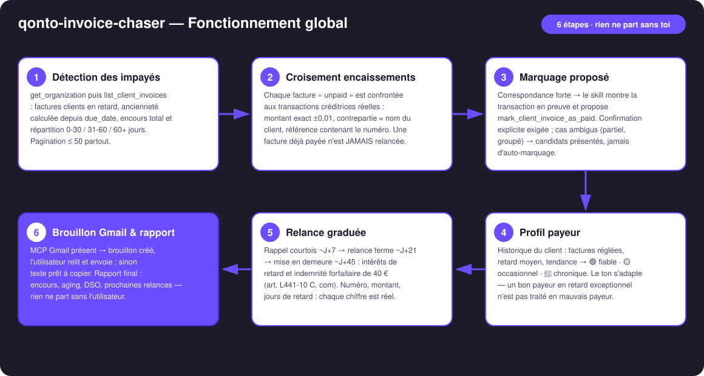
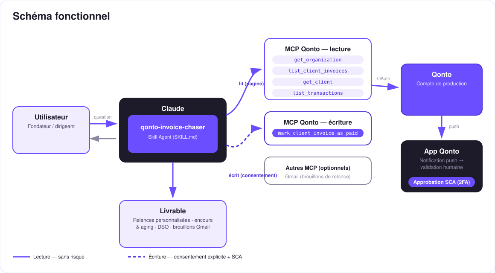

Relancer juste, encaisser plus vite — la relance d'impayés qui vérifie la banque avant d'écrire.
Une facture B2B française est payée en moyenne avec plus de 11 jours de retard — et la relance est la corvée que tout le monde repousse. Le skill transforme le compte Qonto en chargé de recouvrement qui ne froisse personne :
Factures clients en retard (due_date), ancienneté calculée, encours total, aging 0-30 / 31-60 / 60+ jours.
Une facture « unpaid » peut être déjà payée : matching montant / contrepartie / référence → marquage proposé, jamais silencieux.
Bon payeur en retard exceptionnel ≠ retardataire chronique. Courtois J+7 → ferme J+21 → mise en demeure J+45 (intérêts + 40 €).
MCP Gmail présent → la relance atterrit en brouillon : tu relis, tu envoies. Sinon texte prêt à copier. Rien ne part tout seul.
| Prérequis | Détail | Obligatoire |
|---|---|---|
| Compte Qonto production | Le skill s'adapte à toute organisation — get_organization d'abord, zéro donnée en dur | ✅ |
| Pays | Kit juridique complet (intérêts + 40 €, art. L441-10) : France. Autres pays Qonto : relances graduées identiques, référence générique à la directive UE 2011/7 — jamais de taux inventé | ℹ️ détecté |
| MCP Qonto connecté | Connecteur officiel (claude.ai / Claude Desktop), login OAuth | ✅ |
| Factures clients dans Qonto | Le skill lit list_client_invoices ; sans facturation Qonto, rien à relancer — et il le dit | ✅ |
| MCP Gmail | Optionnel, détecté dynamiquement : présent → brouillons ; absent → texte prêt à copier | ⭕ recommandé |
| Historique de facturation | Nourrit le profil payeur ; sans historique : ton standard + avertissement | ⭕ |

list_transactions la détecte (montant exact ±0,01, contrepartie ≈ client, référence contenant le n° de facture) et propose mark_client_invoice_as_paid avec la transaction en preuve — l'email le plus cher du B2B, c'est la relance envoyée à un client qui a payéget_client, suggestion de compléter la fiche — jamais d'adresse devinée
Le skill rédige ; toi, tu décides : la lecture (trait plein) est sans risque ; les deux écritures (pointillé) sont des actions proposées — le marquage « payée » exige la confirmation explicite dans la conversation, et la relance n'existe qu'en brouillon que toi seul relis et envoies. Aucun email ne part sans toi.
| Étape | Quand | Registre | Contenu obligatoire |
|---|---|---|---|
| Rappel courtois | ~J+7 | Chaleureux, présume l'oubli | N° de facture, montant TTC, date d'échéance, moyen de paiement indiqué sur la facture |
| Relance ferme | ~J+21 | Ferme, factuel | Idem + jours de retard, rappel de la 1ère relance, annonce de l'étape suivante |
| Mise en demeure | ~J+45 | Formel, juridique | Idem + intérêts de retard (taux contractuel, sinon BCE + 10 pts, plancher 3× taux légal) calculés au jour près + indemnité forfaitaire de 40 € par facture (art. L441-10 & D441-5 C. com) + délai de règlement + envoi LRAR conseillé |
| Profil | Détecté par | Effet sur la relance |
|---|---|---|
| 🟢 Fiable, retard exceptionnel | Factures toujours réglées, retard moyen faible | Registre le plus chaleureux, bénéfice du doute (« 24 factures, toujours réglées, retard moyen 5 j → ton chaleureux ») |
| 🟡 Retardataire occasionnel | Retards ponctuels dans l'historique | Échelle standard |
| 🔴 Retardataire chronique | Retard moyen élevé, relances répétées | Jamais le registre le plus chaleureux — mais toujours correct et factuel |
| Sortie | Format | Quand |
|---|---|---|
| Réponse dans la conversation | Tableaux markdown (encours, aging, table d'action par facture) | Toujours — c'est la base |
| Brouillon Gmail | Email complet : destinataire, objet avec n° de facture, corps personnalisé | Si le MCP Gmail est connecté ; repli automatique sur texte à copier |
| Texte prêt à copier | Objet + corps, à coller dans n'importe quel client mail | Sans MCP Gmail |
| Dashboard interactif | Fichier/artifact HTML : barres d'aging, top retardataires, pipeline de relances | Si l'hôte affiche les fichiers ; repli sur les tableaux sinon |
La démo ≤ 3 min jointe à la PR suit le storyboard : problème → scan + croisement (la facture déjà payée détectée avant toute relance) → profil payeur → le brouillon qui apparaît dans Gmail avec les chiffres exacts → rapport d'encours. Tournée en live sur un compte de production réel.
| Idée | Effort | Note |
|---|---|---|
Lien de paiement dans la relance (create_payment_link) | Faible | Le client paie en un clic depuis l'email — les payment links marchent malgré la doc MCP |
| Kits juridiques par pays (DE · ES · IT · AT · NL · BE · PT) | Moyen | Transposition de la directive 2011/7/UE propre à chaque pays |
| Rythme automatique (relance du lundi matin planifiée) | Faible | Le rituel devient un rendez-vous |
| Cycle complet order-to-cash (devis → facture → encaissement) | Moyen | Réutilise l'héritage P4 en amont du chasseur |
delete_client_invoice ; brouillons de test nettoyés · IBAN masqués · pagination ≤ 50